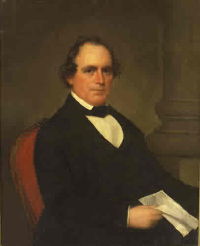

Richard Keith Call Dies at The Grove
The life and complicated legacy of one of territorial Florida's most influential leaders, 1862
By Wm. E. McMullen II
September 14, 1862 — Richard Keith Call—Florida's third and fifth territorial governor—died at The Grove, his Tallahassee plantation home.

Call's career reached across many of the defining struggles of territorial Florida. He arrived as a protégé of Andrew Jackson, represented the territory in Congress, helped shape Tallahassee's early development and commanded troops during the Second Seminole War. His wealth and political power, however, were also inseparable from plantation slavery.
From Andrew Jackson's Circle to Territorial Florida
Born in Virginia in 1792, Call served under Andrew Jackson during the War of 1812 and became part of the political and military network that followed Jackson into Florida. After Spain transferred Florida to the United States in 1821, Call emerged as one of the new territory's most influential American leaders.
He served as Florida's delegate to Congress and became deeply involved in land, law, banking, transportation and territorial politics. Tallahassee—selected as the territorial capital in the 1820s—became the center of his public career and private fortune.
Governor During the Second Seminole War
Call served two nonconsecutive terms as territorial governor, from 1836 to 1839 and again from 1841 to 1844. His first administration unfolded during the Second Seminole War, when federal and territorial forces attempted to remove Seminole people from Florida.
Unlike governors who remained primarily in the capital, Call personally commanded troops in the field. His 1836 campaign included fighting near the Withlacoochee River and the unsuccessful effort at Wahoo Swamp. The campaign illustrates the difficulty federal forces faced in Florida's wetlands—and the determined resistance of Seminole fighters defending their homeland.
Call's military service made him a prominent figure in Florida's expansion, but it also placed him directly within the coercive removal policies that reshaped the peninsula and opened additional land to American settlement.
The Grove and the Labor Behind It
Call built The Grove in Tallahassee around 1840. The surviving Call-Collins House is now recognized as one of Florida's best-preserved antebellum residences. Its construction and the plantation economy surrounding it depended upon enslaved labor.
Research by The Grove Museum documents that enslaved craftspeople helped construct the house. Call also operated brickmaking works whose products contributed to early Tallahassee's physical development. These facts broaden the story beyond one governor's biography: the capital's growth relied heavily upon the knowledge and labor of people whom territorial law treated as property.
At Call's death, his will transferred 197 enslaved people to his surviving daughters. That record makes clear the scale of the human bondage supporting his household, property and political standing.
A Unionist at the End of His Life
Call opposed Florida's secession from the United States. He lived long enough to see the Civil War begin, but not its conclusion or emancipation. He died at The Grove on September 14, 1862, while Florida remained part of the Confederacy.
His position against secession adds complexity to his political story, but it does not erase his role as an enslaver or his participation in territorial expansion and Seminole removal. Florida history is better served when those parts of the record are interpreted together.
From Territorial Power to Civil-Rights Interpretation
The Grove remained in Call's family for generations. It later became the home of Governor LeRoy Collins and Mary Call Darby Collins, Call's great-granddaughter. Collins served as Florida's governor during the civil-rights era and became known for taking positions that challenged the state's resistance to integration.
That remarkable arc—from a plantation built by enslaved people to the home of a twentieth-century governor associated with civil-rights leadership—now shapes the mission of The Grove Museum. The state historic site interprets slavery, political power, family history and civil rights through the people who lived and labored there.
Why September 14 Matters
Richard Keith Call's death marks the end of a life that touched nearly every major theme of territorial Florida: Andrew Jackson, American expansion, Tallahassee's rise, the Seminole Wars, plantation slavery, the movement toward statehood and the crisis of secession.
The survival of The Grove allows those themes to be studied in a single place. It also makes Call's story especially valuable for students: history is not a simple list of accomplishments, but an examination of power, consequences and the lives too often left outside traditional political biographies.
Sources for Additional Reading
- The Grove Museum — Richard Keith Call — An official Florida Department of State account of Call's career, plantation and legacy.
- The Grove Museum — History and Archaeology — Research into The Grove, its construction and the enslaved people associated with the property.
- Florida Memory — Grave Marker for Richard Keith Call — State Archives image and catalog record documenting Call's burial at The Grove.
Previous Entry: September 13 — St. Augustine Is Incorporated
Explore the daily archive: Discover more events that shaped Florida's communities, culture and history.
Today in Florida History